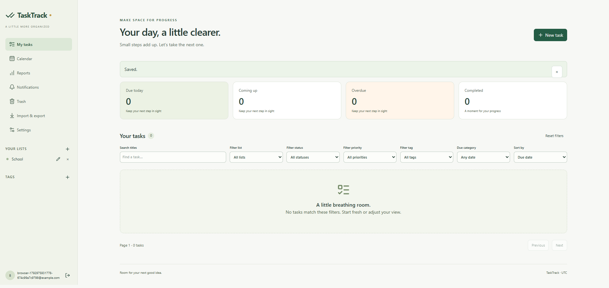
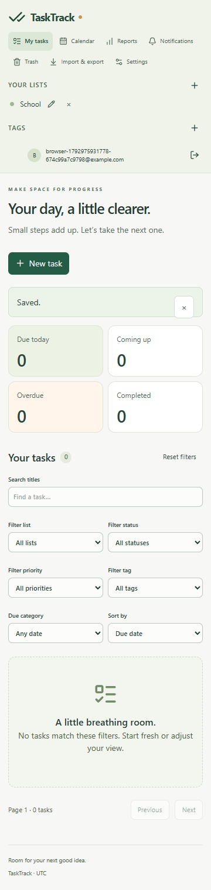
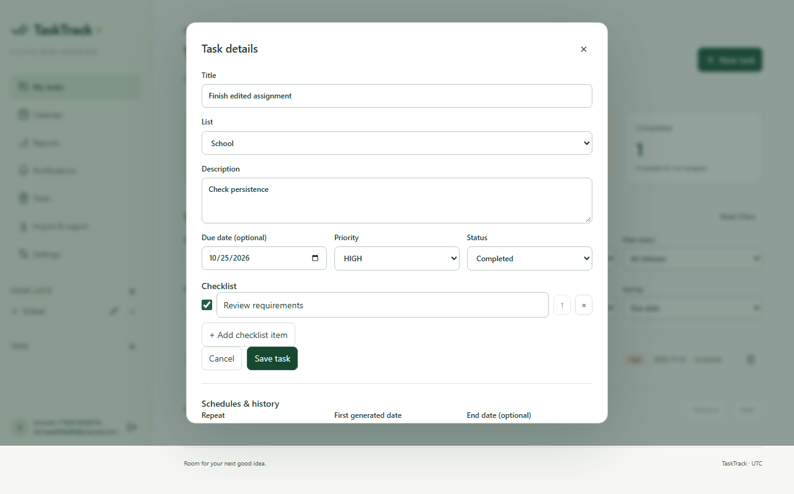

Date: October 25, 2026. Project: Team 2 Fall 2026 web application.
The implemented GUI and service/database connections have local evidence from 47 passing automated cases and a separate successful API restart persistence check. This report addresses the five supplied Person D criteria. The application uses React, FastAPI and PostgreSQL according to this repository's web specification. The earlier Java/Swing/SQLite work is a separate deliverable and is not counted here.
| Item | Rubric criterion | Points available | Evidence folder |
|---|---|---|---|
| 1 | All GUI components are implemented | 2 | 01-GUI-Components |
| 2 | Integration with classes for all functional requirements | 2 | 02-Functional-Integration |
| 3 | Unit testing with test cases and results | 2 | 03-Unit-Testing |
| 4 | Integration testing with test cases and results | 2 | 04-Integration-Testing |
| 5 | Communication Log Table | 2 | 05-Communication-Log |
Total available: 10 points. Instructor score: unassigned. Evidence describes observed results and remaining verification; it does not award a score.
All listed component groups have implementation and local test evidence. This checklist does not certify every possible control interaction or manual accessibility.
| Component group | Implemented controls | Source in repository | Evidence |
|---|---|---|---|
| Account screens | Register, verify email, login, logout, recovery | src/frontend/features/Auth.tsx | Unit U01–U04; browser workflows |
| Workspace and lists | Navigation, list create, rename, confirmed deletion | src/frontend/routes/Workspace.tsx | PostgreSQL list validation and version tests; browser creation |
| Task editor | Title, description, list, due date, priority, status, tags | src/frontend/features/TaskEditor.tsx | U05–U07; full browser workflow |
| Checklist | Add, edit, reorder, complete, remove | src/frontend/features/TaskEditor.tsx | U05/U07; API and browser assertions |
| Search and filters | Combined filters, sorting, pagination, dashboard | src/frontend/routes/Workspace.tsx | Fixed-data API assertions and browser filters |
| Task actions | Complete/reopen, bulk edits, confirmed Trash, restore | src/frontend/routes/Workspace.tsx | Atomic API tests and browser completion/Trash/restore |
| Calendar and schedules | Month/week/agenda, recurrence, reminders | src/frontend/features/Views.tsx; TaskEditor.tsx | Browser schedule/calendar; worker-function and DST tests |
| Supporting views | Tags, activity, reports, notifications | src/frontend/features/Views.tsx; TaskEditor.tsx; Workspace.tsx | API assertions and organization browser scenario |
| Settings and data | Preferences, sessions, password/account controls, import/export | src/frontend/features/Views.tsx | API settings/export/import; browser preferences and round trip |
| Feedback and dialogs | Validation, storage errors, confirmation, keyboard dismissal | src/frontend/components/Dialog.tsx; Auth.tsx; TaskEditor.tsx | U02/U06/U07; browser validation/cancel/Escape |
| Responsive access | 360, 768 and 1920 pixel layouts | src/frontend/app/styles.css | Two browser engines; overflow and automated axe checks |
Screenshots are in 01-GUI-Components/Screenshots. Eleven original browser captures cover desktop, tablet, mobile, workflow, organization and restarted-API states.
The current repository implements the React, FastAPI and PostgreSQL web specification. React forms call the typed fetch client asynchronously; FastAPI routes validate inputs and use SQLAlchemy models and service functions against PostgreSQL. Browser database operations occur on the server, and queued exports and schedule work use worker functions. The interface awaits requests and displays failures without synchronous database work on the browser thread.
The earlier Java AccountService, TaskService and SQLite request belongs to a separate desktop deliverable. Those classes are not the architecture of this web repository. This package reports the current web implementation and does not claim Java or SQLite integration here. Lists are the web specification's task containers. No separate administrator role or admin screen is claimed by this report.
Integration points: src/frontend/api/client.ts connects controls to api.py, task_api.py and extras_api.py. security.py resolves the current account and session; owner checks in services.py scope records to that account. models.py and db.py persist transactions. jobs.py and adapters.py implement scheduled work and mail/export processing. Migrations are in the backend Alembic directory. All paths are relative to the repository root.
| Requirement | Implemented integration and passing local evidence | Qualification |
|---|---|---|
| FR1 | Auth UI; register/verify/login/logout/forgot/reset APIs; hashed-secret/single-use/recovery tests; browser workflow | Browser fixture reads the encrypted test mailbox. Live SMTP transport remains unverified. |
| FR2 | List create/rename/version/confirmed-delete tests; browser list creation | Nonempty lists, including Trash, are deliberately blocked from deletion. |
| FR3 | Required title and optional description/date; parameterized validation/boundaries; browser creation | Server validates independently of HTML constraints. |
| FR4 | Full task edit/move; stale-version conflict test; browser edit/persistence | Multiple concurrent writers tested for one winner and one conflict. |
| FR5 | Confirmed Trash, 30-day expiry, restore, permanent delete; browser cancellation/restore | Purge function tested through worker services, not Redis delivery. |
| FR6 | To Do/In Progress/Completed/reopen; API transition/activity tests; browser completion | Completion events remain in reports after reopening. |
| FR7 | Low/Medium/High with Medium default; API and frontend form tests | None specific beyond remaining release checks. |
| FR8 | Fixed-clock dashboard dataset and browser summary | Uses account timezone; completed tasks excluded from due categories. |
| FR9 | Combined owner-scoped search/list/status/priority/tag/due filters; API dataset and browser filters | Title searches escape literal wildcard characters. |
| FR10 | Due/priority/newest ordering and pagination; API boundaries; UI selectors | Load measurement uses 25-row pages. |
| FR11 | Checklist create/edit/reorder/complete/delete via task editor; frontend/API/browser tests | Checklist changes are saved with the parent task version. |
| FR12 | Daily/weekly/monthly rules, anchored month end, end dates, stored timezone; repeated worker-function scans and browser schedule creation | Real Celery/Redis process restart/retry remains unverified on this Windows host. |
| FR13 | Reminder eligibility, local time/DST validation, unique notifications, email outbox/retry; API/function tests; browser schedule creation | Real SMTP and Redis transport remain unverified. SMTP is at-least-once; in-app delivery is deduplicated. |
| FR14 | Monthly/weekly calendar and small-screen agenda; dated range query API; browser calendar task opening | Browser screenshot matrix covers task views; manual calendar screen-reader review remains. |
| FR15 | Unique personal tags, rename/delete/assignment; API and browser tests | All tag links require the same owner. |
| FR16 | Atomic complete/move/priority/Trash bulk API; rollback test; browser bulk completion | Selection capped at 100 tasks. |
| FR17 | Account-scoped creation/edit/completion/reopening/restoration history; API assertions and task history UI | History exposes event/field names rather than private snapshots. |
| FR18 | Durable export job, repeatable-read worker snapshot, owner download, bounded format; validated preview/apply; rollback/single-use tests; browser round trip | Browser harness directly invokes the real export worker function; no broker transport claim. |
| FR19 | Completion-event reports plus current status counts; fixed dataset/reopening history tests; browser report | Reopening does not erase earlier completion events. |
| FR20 | Timezone/notification settings, password change/rotation, individual/all-session revoke, account deletion cascade; API and browser settings | User-supplied current password is required for password change/deletion. |
Eight frontend tests passed in two files on October 25, 2026. API requests are mocked in component tests; these are isolated control tests, not database integration tests. U03 checks required/minlength attributes; it does not independently prove every browser validation path. See copied test source and original console output.
| ID | Control | Input or setup | Expected result verified | Recorded result |
|---|---|---|---|---|
| U01 | Login | Email and password with leading/trailing spaces | Exact password submitted; login callback runs | Pass |
| U02 | Login error | API rejects invalid credentials | Error displayed and retry enabled | Pass |
| U03 | Registration boundary | Inspect registration controls | Email required; password minimum length attribute is 12 | Pass |
| U04 | Verification token | Verification token in URL fragment | Fragment removed; token submitted to verification API | Pass |
| U05 | Task controls | Title, date, high priority, in-progress status, tag, two checklist items | Correct request; reordered checklist and completed flag preserved | Pass |
| U06 | Database error feedback | Task save rejects with Storage is unavailable | Alert shown, title retained, editor stays open | Pass |
| U07 | Cancel and checklist delete | Add/remove checklist item; cancel editor | Item removed; close called; no API write | Pass |
| U08 | Timezone boundary | 2026-10-26 01:00 UTC; New York and Tokyo | Dates are Oct 25 and Oct 26 respectively | Pass |
Recorded local runs on October 25, 2026: 33 PostgreSQL-backed cases passed, plus six browser cases (three scenarios in Chrome and three in Chromium). These are additional to the eight frontend unit/component cases, giving 47 automated cases. The separate API process restart probe passed and is not added to that count. Parameterized cases are counted as recorded by JUnit.
PostgreSQL-Test-Cases.csv lists all 33 exact names and results. Copied tests contain the full inputs and expected assertions. Backend fixtures use real PostgreSQL with disposable schemas. Coverage includes successful writes, invalid names/titles/enums/dates, maximum field lengths, ownership, stale versions and concurrent writers, rollback on failures, session/CSRF/security behavior, migrations, imports, exports, recurrence and reminders.
| ID | Browser | Scenario | Actual result | Milliseconds |
|---|---|---|---|---|
| B01 | chrome | register, verify, create, edit, filter, complete, reload, cancel delete and restore | passed | 4349 |
| B02 | chrome | responsive controls and automated accessibility at 360, 768 and 1920 pixels | passed | 6139 |
| B03 | chrome | tags, bulk actions, calendar, schedules, reports, preferences and import/export | passed | 7454 |
| B04 | chromium | register, verify, create, edit, filter, complete, reload, cancel delete and restore | passed | 4611 |
| B05 | chromium | responsive controls and automated accessibility at 360, 768 and 1920 pixels | passed | 5854 |
| B06 | chromium | tags, bulk actions, calendar, schedules, reports, preferences and import/export | passed | 6733 |
The primary workflow registers and verifies an account, logs in, creates a list and task, edits fields and checklist, filters and completes the task, reloads and logs in again, verifies saved fields, cancels deletion, and exercises Trash and restoration. A separate probe stops and restarts the API before checking saved data through the UI. The responsive scenario checks 360, 768 and 1920 pixels, validation, keyboard dismissal and automated axe results. The organization scenario exercises tags, bulk completion, calendar, schedules, reports, settings and export/import.
Ten concurrent authenticated accounts with 500 tasks each completed 100 measured retrieval/update requests using 25-row pages. The recorded p95 was 0.26424 seconds against a two-second target. This is in-process ASGI with real PostgreSQL; network and proxy time are excluded. The production frontend build, lint, formatting and type checks passed. Runtime dependency audits reported zero known vulnerabilities at execution.
Firefox 157.0 launch timed out; no Firefox pass is claimed. Docker/Compose, live Redis and Celery transport, live SMTP, staging/production HTTPS, operational alerts and backup/restore rehearsals were not verified. Browser tests read verification tokens from the encrypted test mailbox and invoke the real export worker function directly. Worker function and committed-state tests do not establish broker or mail delivery. Manual accessibility, five-volunteer usability and a second-developer setup review remain outstanding. Final rubric points are assigned by the instructor.
Date is October 25, 2026 in America/New_York. Entries summarize actual user/assistant instructions and recorded work-session updates. Exact chat timestamps are not available. This is a work-session log; teammate correspondence and instructor approval are not represented.
| Date | Participants | Communication | Topic | Decision or outcome |
|---|---|---|---|---|
| 2026-10-25 | User to assistant | Work request | Extract Java archive, run baseline tests, wire GUI and retain Person D evidence | Initial desktop scope established; separate legacy evidence retained |
| 2026-10-25 | User to assistant | Evidence request | Asked which file contains Person D evidence | Evidence location requested |
| 2026-10-25 | User to assistant | Directory and alignment instruction | Selected Team-2-Fall-2026; requested correct folders and alignment with documents | Downloads repository became active work directory |
| 2026-10-25 | Assistant to user | Scope clarification recorded in prior log | Repository plans described a React/FastAPI/PostgreSQL web app | Web scope distinguished from Java desktop work |
| 2026-10-25 | User to assistant | Continuation | User said continue | Work continued against repository web specification |
| 2026-10-25 | Assistant to user | Implementation and testing updates recorded in prior log | API/UI work, browser fixes, validation, accessibility, persistence and performance checks | Existing logs record 33 database cases, 8 component cases, 6 browser cases and restart probe |
| 2026-10-25 | Assistant to user | Limitations recorded in prior log | Firefox launch timeout and unverified external release checks | No unsupported browser, mail, broker, deployment or usability pass claimed |
| 2026-10-25 | User to assistant | Person D rubric | Supplied five report criteria worth two points each; requested a folder | Submission organized into five matching evidence sections |
| 2026-10-25 | Assistant to user | Packaging update | Explained existing 47 automated passes, restart result and remaining qualifications | Report, test records, screenshots and this communication table consolidated |
Prior session log is included for traceability. Add actual teammate communications separately if the course requires a team log; do not treat an unfilled or invented entry as evidence.


